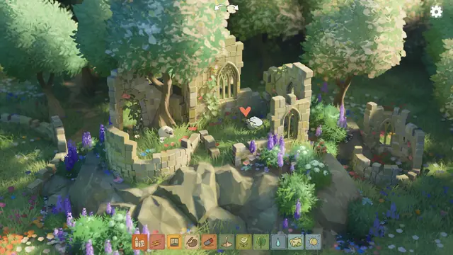
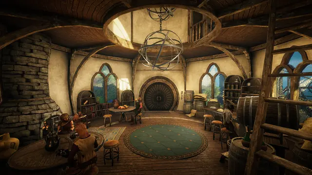
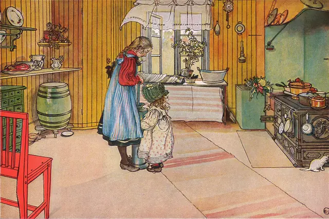
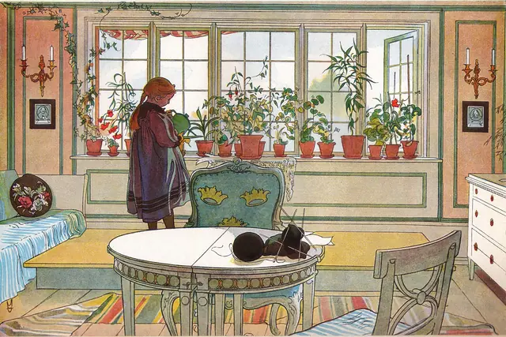
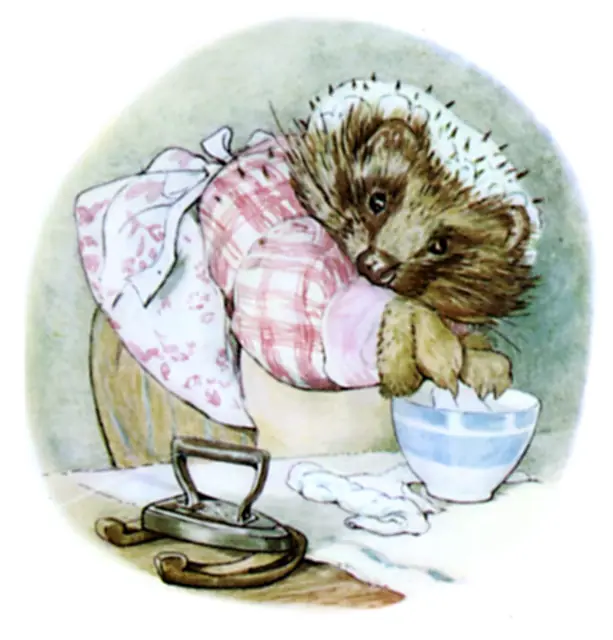
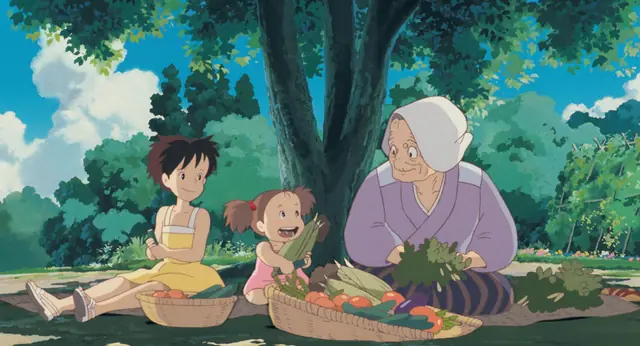
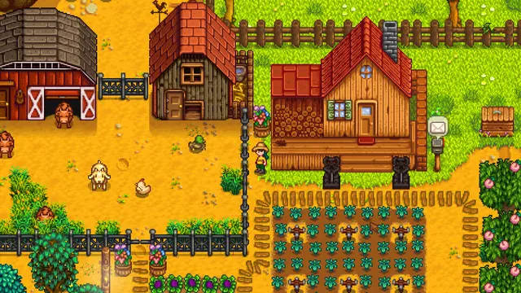
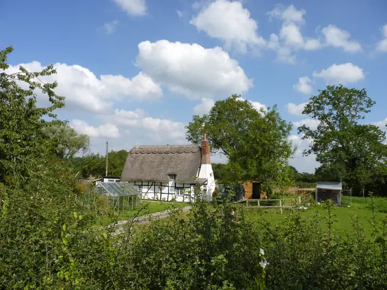

The feel
Cottagecore is an escape fantasy: a cottage in the woods, where you live as if it were a simpler time and make things by hand, baking bread, gardening, knitting and crocheting.1 The New York Times pictured scones coming out of the oven in a thatched cottage at the edge of the woods while linen dries on the line, a slow life "in which nothing much happens at all".2
Its pleasure is in the chores: there is no labour beyond the domestic, and everyday tasks bring a gauzy sense of fulfilment.2 One fan told the Times it was "like Animal Crossing but in real life".2 A think tank of game designers, looking at games like Animal Crossing and Stardew Valley, defines their cosiness as a fantasy of safety, abundance and softness: nothing is high-risk, and fishing or gardening can be ignored with no ill results.3
- homemade
- slow
- sun-faded
- floral
- well-loved
- kind
Where it comes from
The pastoral escape is 2,300 years old: the poet Theocritus, credited with inventing pastoral poetry, wrote of shepherds for an urban class that wanted the countryside without losing its refinement.4 In 1783 Marie Antoinette had Richard Mique build a hamlet of ten rustic buildings round a lake at Versailles, with a working dairy and a farm,5 where she and her circle would play at being farmers and shepherdesses.4 In Victorian England, where the 1851 census first counted more town dwellers than country ones, the thatch-and-roses cottage became a nostalgic ideal in the paintings of Helen Allingham and Myles Birket Foster, and the Arts and Crafts movement, a reaction against industrialisation, took up the old-fashioned cottage garden.6 The name itself is hard to date: Tumblr saw its first #cottagecore tag in March 2014, other reports start it in 2017 or 2018, and they agree only that it took off in early 2020.7,1 Use of the tag on Tumblr rose 153% between March and April that year, and that summer Taylor Swift's folklore, made in lockdown, carried the look into the mainstream.7
Core elements
Cottages and woodland
Cottages, gardens, countryside and forest are its key motifs.6 Picture a thatched cottage bordering the woods,2 with flowers, warm tones and worn furniture.8
Wild gardens and meadows
Search for the word and you find wild gardens with sunlit flowers in full bloom.6 Alongside them are open meadows, freshly picked flowers, foraged mushrooms and homegrown produce,7 and farm animals to look at.2
Handmade cloth and craft
Gingham and lace,6 calico tea cosies, cabbage roses and doilies,2 knitting and embroidery.9 The making counts as much as the thing made: crocheting a blanket is cottagecore, and so is the blanket.1
Baking and the kitchen
Cakes and pies are among its motifs,6 along with wicker baskets of farm-fresh eggs and linen towels wrapped round fresh bread.9 In the pictures, every pie comes out of the oven with an immaculate golden lattice crust.2
Warm, natural colour
A natural palette of neutrals and warm tones.9 For My Neighbor Totoro, Kazuo Oga was asked for subdued but beautiful colours, and came to read Miyazaki's "happy" colours as warm ones: "not piercing, raw primary colors, but softer".10
Vintage and worn objects
Dried and fresh flowers indoors,9 worn furniture8 and grandmother's vintage dishes.9 The past it longs for is invented, borrowing from Marie Antoinette's hamlet, the Renaissance, the Middle Ages and even the classical world.1
How to do it
Plant a wild cottage garden
Base it on the old-fashioned English cottage garden, wilder and less symmetrical than the geometric carpet bedding of high Victorian gardens.6 For reference, study Helen Allingham's watercolour cottages, which seem to capture the whole feel of cottagecore.6
Paint identifiable plant species
For My Neighbor Totoro, Miyazaki asked for rural landscapes, trees and flowers painted with close attention, and brought plant books to the background artists.10 Kazuo Oga stopped painting vague weeds and painted species, down to sawtooth oaks, konara oaks and camphors.10
Mix subdued, warm colour
Oga was told to use subdued but beautiful colours: mix many colours, but keep them beautiful.10 Keep the palette warm and gentle, in yellows and oranges, without high-intensity contrast or hues.3
Use warm, soft lighting
Use warm light from a clear source over low ambient light, so shadows stay soft, and break strong sun into dappled or partly shaded beams.3 Indoors, let the light change the colour of each wall and pillar, as Oga learned to do on Totoro.10 Where lights take a colour temperature in Kelvin, lower is warmer: a clear-day sun is 5500 to 6000 K, and a sunrise or sunset sun about 1850 K.11
Make every chore optional
Offer many small activities, such as fishing, gardening and decorating, and let the player ignore any of them with no ill results, as Animal Crossing, Stardew Valley and Harvest Moon do.3 Make each one pleasant in itself: in Animal Crossing, shaking a tree for fruit still sounds good after thousands of repetitions.3
Place plants and props by hand
Eastshade's world, roughly 1 km by 1 km, was built by hand, and co-designer Jaclyn Ciezadlo placed every single plant.12 To keep that fast, Danny Weinbaum used a prefab stamper that drops a scene of props into the world and conforms it to the height of the terrain.12
Use natural materials and soft sound
Build the world from natural materials: wood, stone, fur, moss, cotton, wool, water and living plants.3 Score it with gentle acoustic music played by people, and fill the quiet with running water, rain, a gentle fire or a purring cat.3
Cheat sheet
Do
- Let the garden grow wild and asymmetrical, with flowers in full bloom.6
- Paint plants as species you can name, not as vague weeds.10
- Let the player watch things build. Tiny Glade's walls rearrange themselves as you draw, and Tomasz Stachowiak calls that the game's most vital element.13
- Put bad weather outside the window: cold rain on the glass makes a reading nook feel warmer.3
- Leave moments where nothing happens. Tiny Glade was built as a retreat to relax in, not a stream of events.13
Avoid
- Survival meters. Eastshade's early hunger, thirst and malady bars were "like a trainwreck" against the slow exploring the team wanted, so they were stripped back.12
- Chores that punish neglect, such as mandatory maintenance or pets that need constant care.3
- Pop-ups, nagging and timed events. They pull focus and create a fear of missing out.3
- A picture filtered to perfection. The New York Times calls cottagecore so filtered that it can't be reproduced in real life, while messy humanity always seeps in.2
- A countryside with one kind of person in it. Critics point to the overwhelming whiteness of cottagecore content and to its nostalgia for times that were oppressive for women and people of colour.1,9
Tools and tutorials
- Stitch Fiddle
Chart cross-stitch, knitting and crochet patterns, or turn pixel art into one.
- Paint Ghibli-style grass in gouache
Yumione Art builds a meadow step by step. Try the same layering in Krita or Procreate.
- Pixel art of Stardew Valley characters
GoatBlob Pixel breaks down sprite proportions, outlines and soft shading.
- Godot: Physical light and camera units
Set lights by colour temperature in Kelvin, with real values for the sun.11
Palette
Meadow, hedge and washed sky from Totoro's countryside, butter and barn brown from Stardew Valley's farm, red and dry meadow grass from Larsson's breakfast under the birch, blossom from Animal Crossing's spring.
Feel the vibe
In motion
Listen
Stardew Valley's spring music. Eric Barone wrote it himself, in Propellerhead Reason.14
YouTubeFrom My Neighbor Totoro. Summer fields and a long walk home.
YouTubeFrom Just Another Diamond Day, the album that documents her slow journey to Scotland by horse and cart.15
YouTubeMusic for a building game its makers promised would have no combat or management pressure.13
YouTube
More references








Games
- Harvest Moon
A mundane, ritual refuge in pastoral life, with clear seasons for farm work and village events.3 Stardew Valley began from its formula.14
- Stardew Valley
Eric Barone made it alone over at least four and a half years, drawing the art in Paint.NET and building the maps with the xTile library.14 Study how chores and seasons turn into comfort.
- Eastshade
You take painting commissions instead of fighting, and each canvas bleeds in from rough colour to fine detail.12 Study its hand-placed plants.
- Animal Crossing: New Horizons
Study the gardens, the furniture and how slow days are paced.
- Tiny Glade
Walls rearrange themselves as you draw them, and there is no combat or management pressure.13
Film, art and more
- My Neighbor Totoro
Kazuo Oga painted its 1950s rural suburbs with close attention to every tree and flower.10 Study the old house, the rice fields and the rain.
- Ett hem (A Home), Carl Larsson
Study the daylight, textiles and flowers in these rooms.
- The Tale of Peter Rabbit, Beatrix Potter
Potter's stories evoke childhood and pastoral themes at once, and call up cottagecore's own keywords: wholesome, warm, gentle, quaint.6 Study the kitchen garden and the watercolour washes.
- Anne of Green Gables, L. M. Montgomery
Study the orchards, the puffed sleeves and the farmhouse.
- folklore, Taylor Swift
Made in lockdown, its packaging carried cottagecore into the mainstream.7
- Hameau de la Reine, Versailles
Ten rustic buildings round a lake, with a working dairy and a farm, built for Marie Antoinette from 1783.5 The palace itself calls it somewhat like a stage set.5
- Calico
Patchwork quilts pieced from patterned tiles, with cat tokens that look ready to snuggle down on them.16
- Everdell
Woodland critters at work in hollow-log buildings, which one reviewer calls a game for cottagecore fans.17 Bosley says the pitch reminded him of the Redwall books.18
Sources
- 1Crafting Cottagecore: Digital Pastoralism and the Production of an Escapist Fantasy
- 2Escape Into Cottagecore, Calming Ethos for Our Febrile Moment
- 3Coziness in Games: An Exploration of Safety, Softness, and Satisfied Needs
- 4Cottagecore Debuted 2,300 Years Ago
- 5The Queen's Hamlet
- 6The Significance of Victorian England for the Cottagecore Aesthetic
- 7The Escapist Land Of 'Cottagecore,' From Marie Antoinette To Taylor Swift
- 8The Architecture of Cottagecore
- 9What Exactly Is Cottagecore and How Did It Get So Popular?
- 10Defining the World of 'My Neighbor Totoro'
- 11Physical light and camera units
- 12Turning painting into a game mechanic in the gorgeous Eastshade
- 13Exclusive: Tiny Glade Developers Discuss Bevy, Proceduralism, Publishers & Cozy Games
- 14Road to the IGF: ConcernedApe's Stardew Valley
- 15Vashti Bunyan: 40 Years Later, A Musical Rebirth
- 16Reaping the Rewards: Cats + Quilts = 'Calico'
- 17Everdell review: “This is the perfect cozy board game for Fall”
- 18Andrew Bosley: Art in Board Games #26